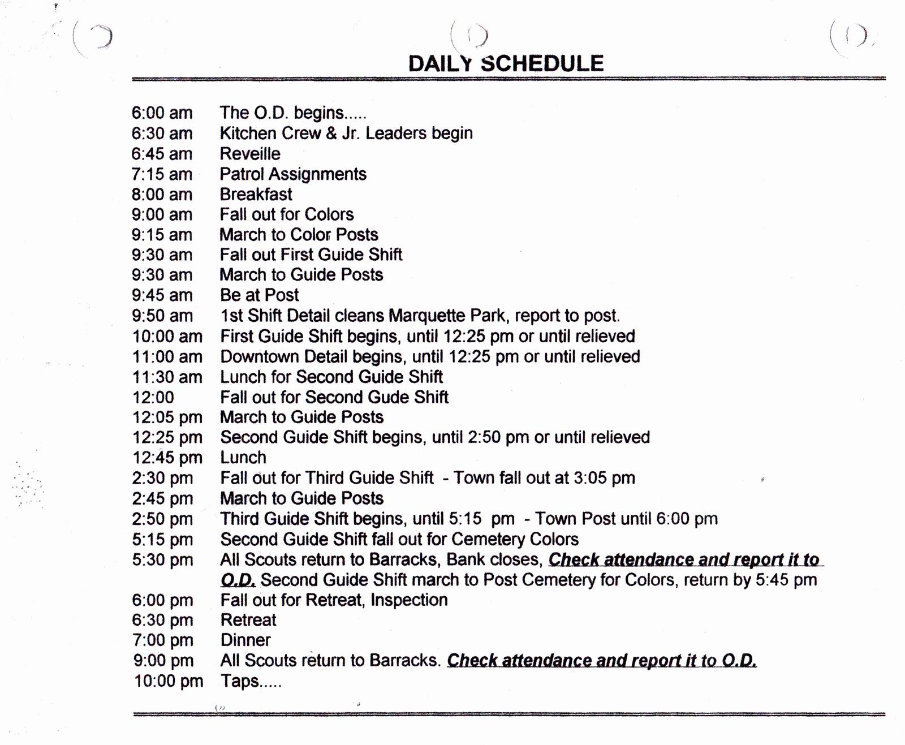

| Date | Activities | Hours involved (me) | Total Man-Hours |
|---|---|---|---|
| May 05, 2013 | First troop practice | 2 | 58*2 |
| May 12, 2013 | Patrol Schedule and Barracks Colors written | 1 | 0 |
| May 19, 2013 | Second Practice, Patrol Flag Duties Assigned | 2 | 58*2 |
| July 06, 2013 | Congregation on Shepler's Dock, Arrival | 12 | 58*11 |
| July 07, 2013 | Second Day on the Island | 16 | 58*5 |
| July 08, 2013 | Third Day on Island | 16 | 58*5 |
| July 09, 2013 | Fourth day, Midweek Inspection | 16 | 58*5 |
| July 10, 2013 | Fifth day on Island, Governor's Mansion | 17 | 58*5, 6*3 |
| July 11, 2013 | Sixth Day on Island, Marching Competition, Leader's Night Out | 20 | 58*5, 18*3 |
| July 12, 2013 | Seventh Day on the Island, Final Inspection, Cleaning | 18 | 58*7, 36*3 |
| July 13 | Final clean and departure from Island | 7 | 58*3 |
| December 20, 2013 | Website begun, translated to new program | 1 | 3 |
| December 21, 2013 | Website Development | 4 | 5 |
| December 22, 2013 | Website Development | 6 | 6 |
| 138 | 3232 |
Daily Schedule 